A head-mounted viewpoint
Isaac Sim renders furnished rooms with an original humanoid proxy, a head camera, and forward arms. The benchmark varies dimensions, lighting, camera directions, and arm reach.
Detect the structure behind furniture, robot arms, and visual clutter. A learned edge model turns RGB into typed boundaries; calibrated multi-view fitting estimates the room’s 3D shell.
96 test images from four held-out parameterized rooms. Boundary F1 uses a 2-pixel tolerance at 384 × 256. Inference timing excludes I/O and reconstruction.
01 / THE PIPELINE
Isaac Sim renders furnished rooms with an original humanoid proxy, a head camera, and forward arms. The benchmark varies dimensions, lighting, camera directions, and arm reach.
A ResNet-18 encoder/decoder predicts visible edges plus full wall–wall, wall–floor, wall–ceiling, door, and window boundaries. It sees RGB only.
Eight calibrated views constrain six Manhattan planes through typed edge reprojection. The output is a closed rectangular shell with per-edge support diagnostics.

02 / SEEING THE ROBOT ITSELF
The body exists in the 3D scene, so it can occlude architecture and reflect in a mirror. Reflected furniture, the robot, and reflected room lines are visual distractors—not additional structural ground truth.
The proxy is 1.68 m tall with a camera at 1.585 m. This pilot uses a pinhole camera and scripted viewpoints; it does not reproduce NEO’s optics, locomotion, or collision-free motion.
03 / MEASURED RESULTS
The 576-image benchmark has 16 training rooms, four validation rooms, and four test rooms. Every furnishing family appears in each split. Room instances have different dimensions and lighting; all views of a room stay together. Assets and rectangular topology are shared.

| Held-out room | Visible P / R / F1 | Amodal F1 | Dimension MAE | 3D edge Chamfer |
|---|---|---|---|---|
| bedroom_05 | 0.862 / 0.965 / 0.910 | 0.965 | 0.043 m | 0.035 m |
| kitchen_05 | 0.908 / 0.946 / 0.927 | 0.944 | 0.018 m | 0.019 m |
| living_05 | 0.900 / 0.927 / 0.913 | 0.938 | 0.028 m | 0.026 m |
| office_05 | 0.875 / 0.966 / 0.918 | 0.982 | 0.003 m | 0.012 m |
3D results assume known metric camera poses and Manhattan axes. Mean dimension MAE: model 0.023 m; oracle edges 0.016 m; training-median room prior 0.338 m. The prior estimates a typical training-room size without using test images. Chamfer is symmetric mean distance between sampled shell edges.
04 / INTERACTIVE 3D
Drag or use arrow keys to orbit; scroll or press +/− to zoom. Reference geometry is shown only for evaluation—it is not an input to reconstruction.
Support is a heuristic, not calibrated uncertainty. The closed shell does not reconstruct door/window openings or furniture, and does not establish safe free space for navigation.
05 / WHAT THE MODEL ACTUALLY PREDICTS
Each strip shows RGB, reference visible edges, predicted visible edges, and predicted full structure. Cameras 0, 6, 12, and 18 are shown for every test room, using a fixed selection rule. Robot arms are visible in the image.
Visible prediction: mint; reference: blue. Full structure: wall–wall mint, floor amber, ceiling cyan, door violet, window coral.
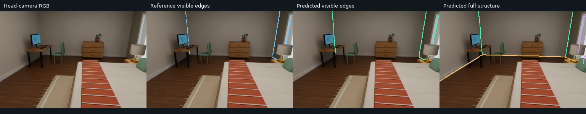
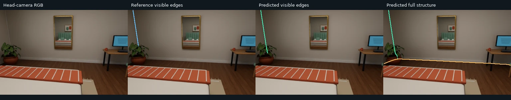
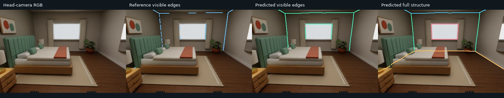
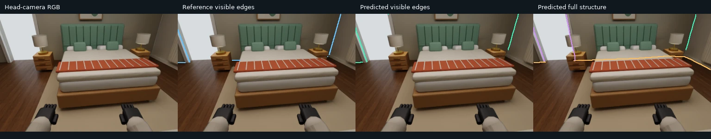
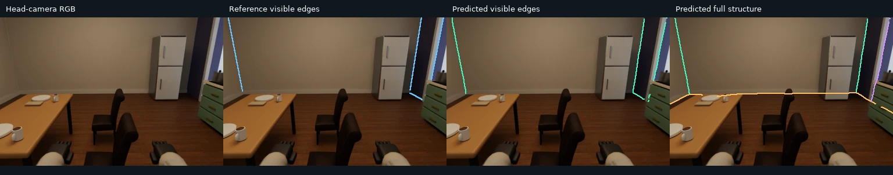
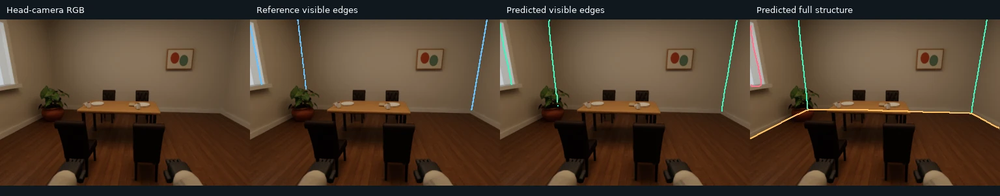
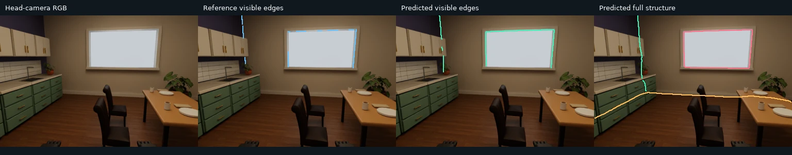
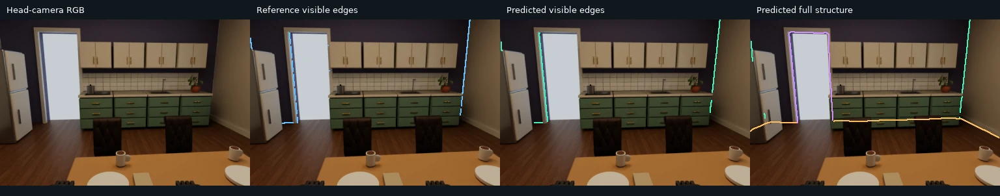
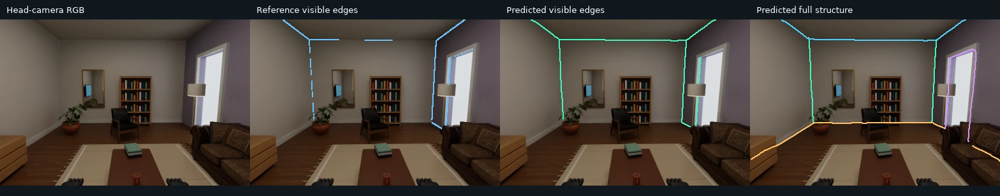
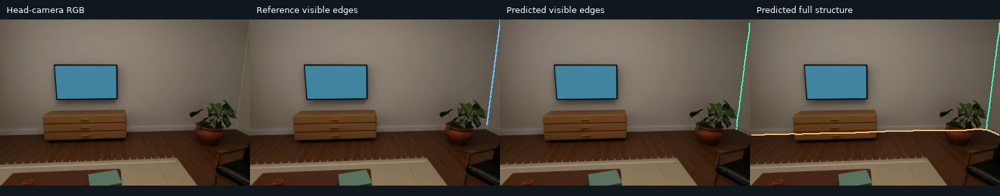
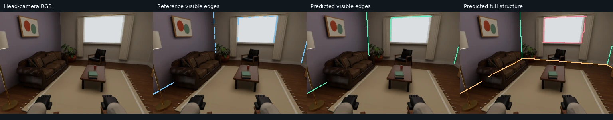
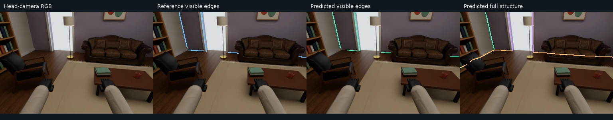
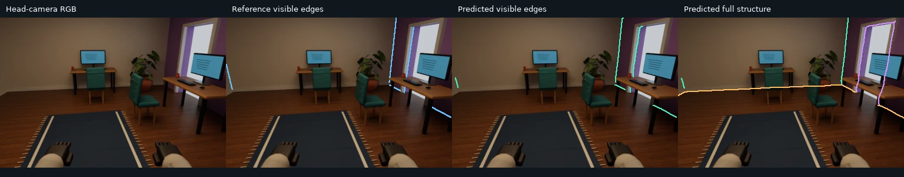
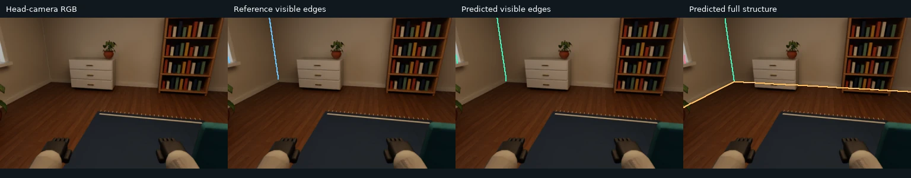
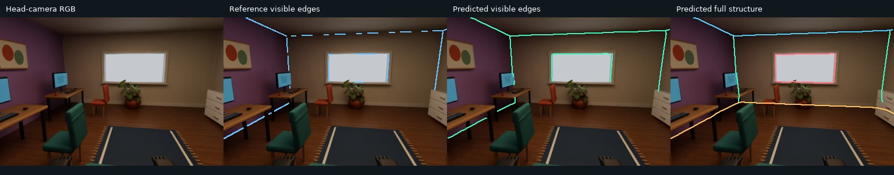
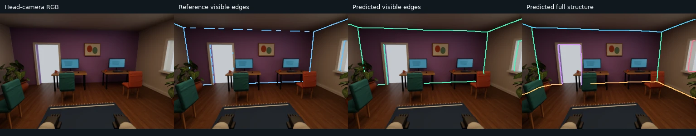
06 / REPRODUCIBILITY & NEXT STEPS
JSON configs connect scene generation, the training cache, checkpoint selection, and evaluation. Geometry hashes and room IDs check split integrity. A separate eight-image fitting diagnostic verifies the training wiring.
TensorBoard records loss, learning rate, throughput, memory use, and validation images. Resumable checkpoints, full-resolution captures, and raw predictions remain local. The repository includes unit tests and inference/export commands.
A future robot can seek a viewpoint that reveals unknown or weakly supported structure, update its map, and repeat. That requires pose estimation, persistent mapping, calibrated uncertainty, obstacle/free-space mapping, and safe next-view planning.
This experiment validates perception and single-room fitting with known poses. It does not demonstrate autonomous navigation, general multi-room reconstruction, or real-robot performance.
python scripts/build_learning_dataset.py vis/benchmark_headcam python scripts/train_edges.py python scripts/evaluate_edges.py python scripts/make_perception_report.py python -m tensorboard.main --logdir artifacts/runs